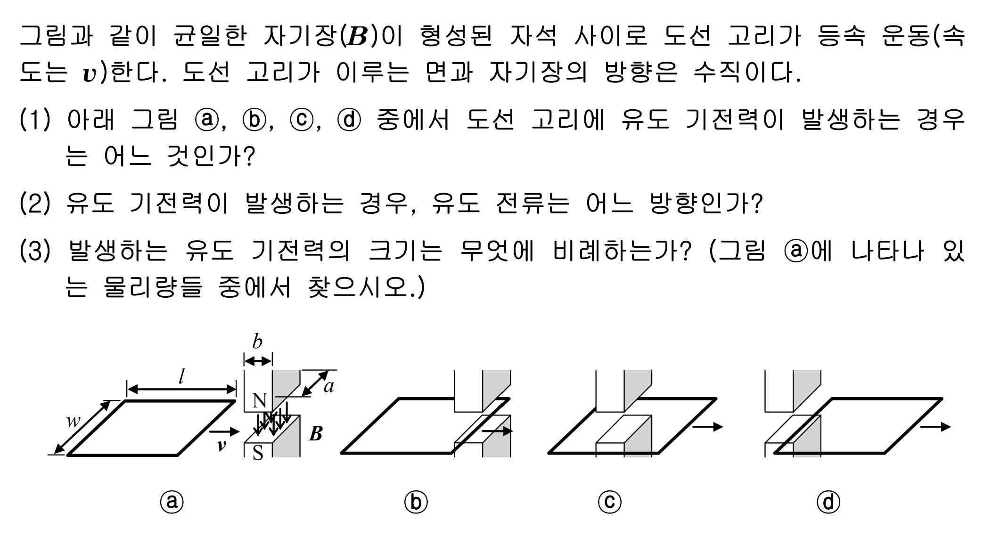

문제 2
그림과 같이 균일한 자기장(\(\boldsymbol{B}\))이 형성된 자석 사이로 도선 고리가 등속 운동(속도는 \(v\))한다. 도선 고리가 이루는 면과 자기장의 방향은 수직이다.
(1) 아래 그림 (a), (b), (c), (d) 중에서 도선 고리에 유도 기전력이 발생하는 경우는 어느 것인가?
(2) 유도 기전력이 발생하는 경우, 유도 전류는 어느 방향인가?
(3) 발생하는 유도 기전력의 크기는 무엇에 비례하는가? (그림 (a)에 나타나 있는 물리량들 중에서 찾으시오.)
